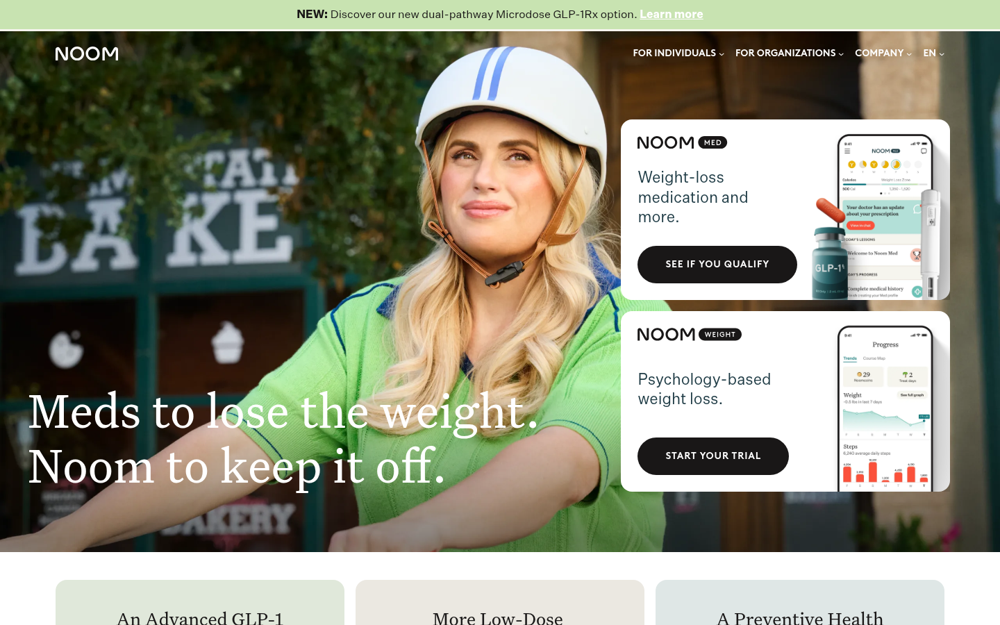
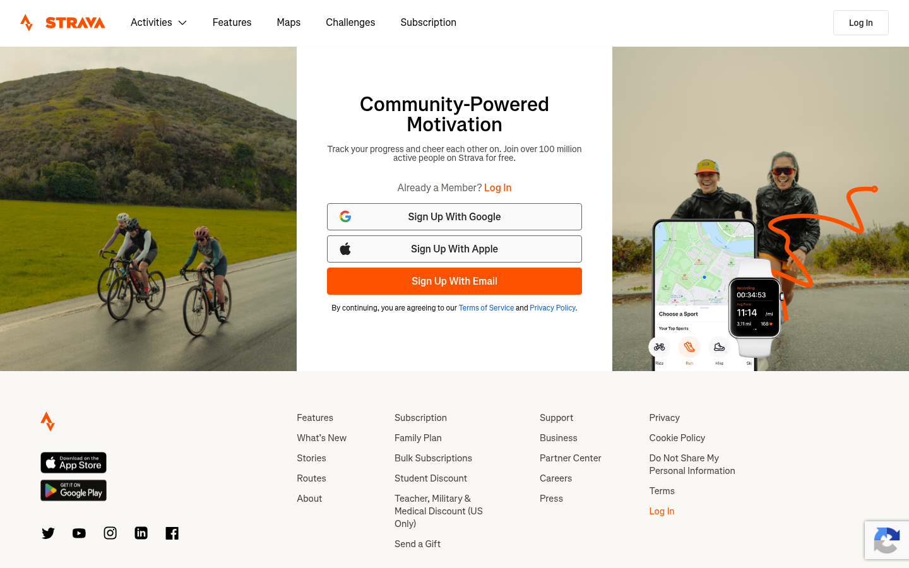
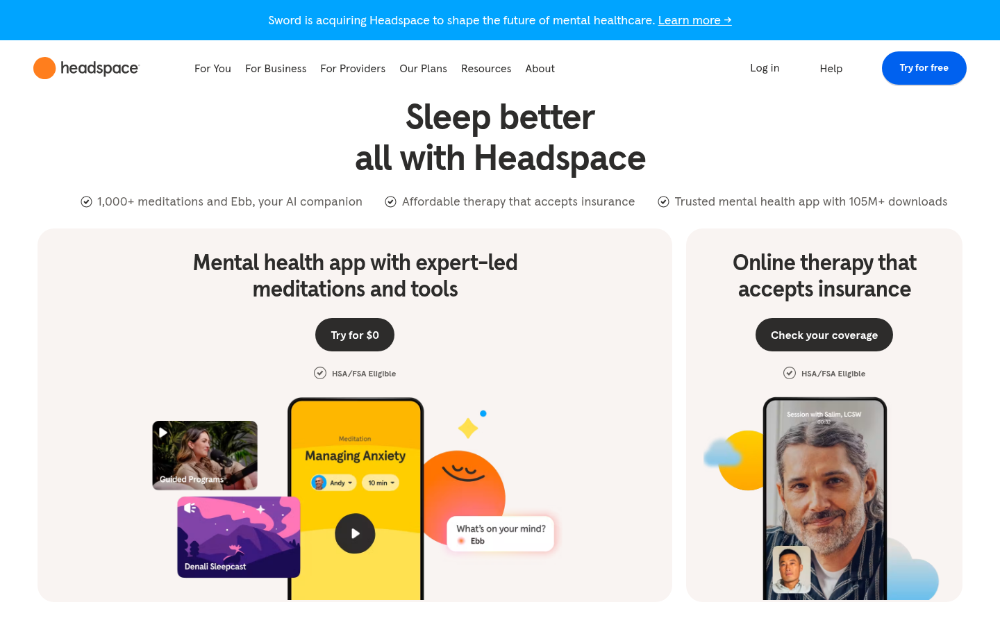
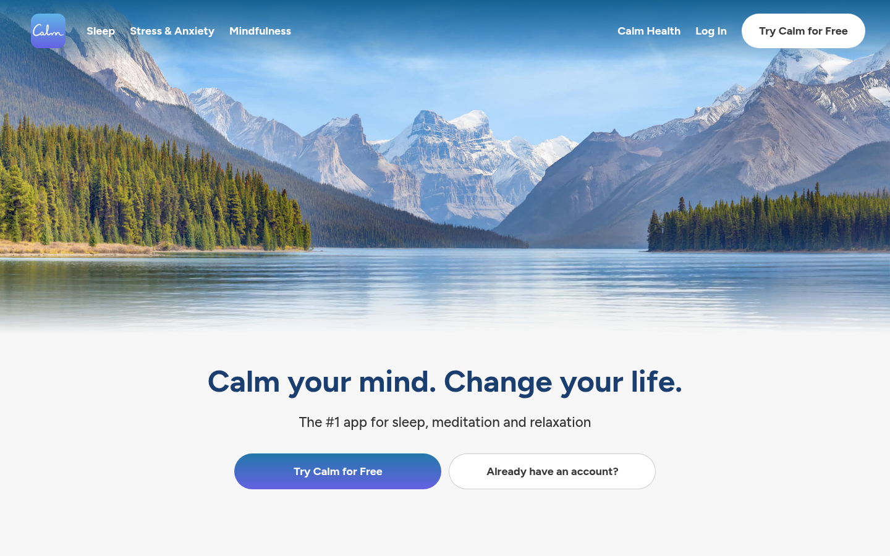
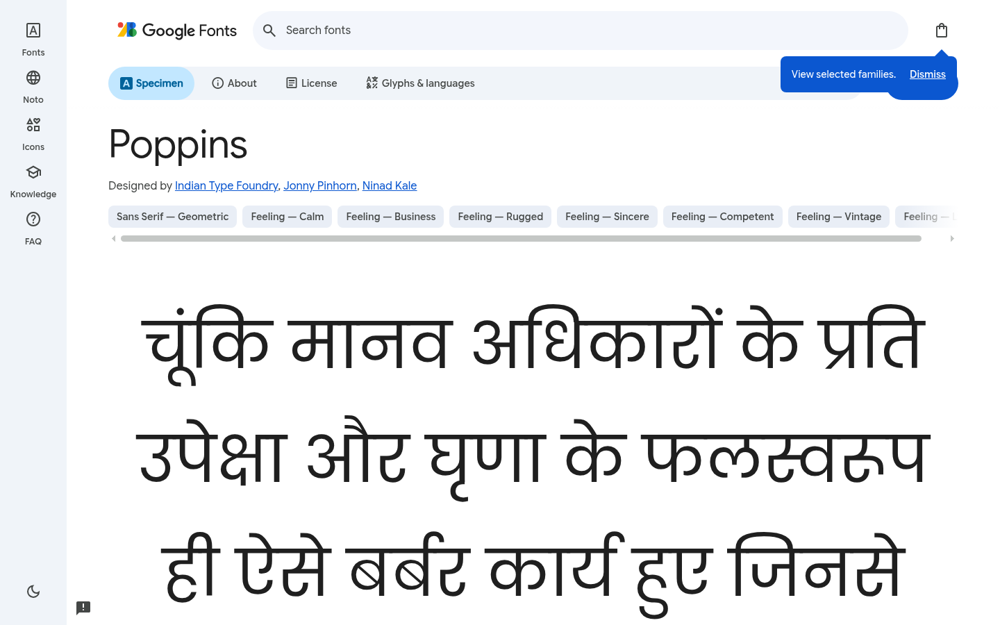
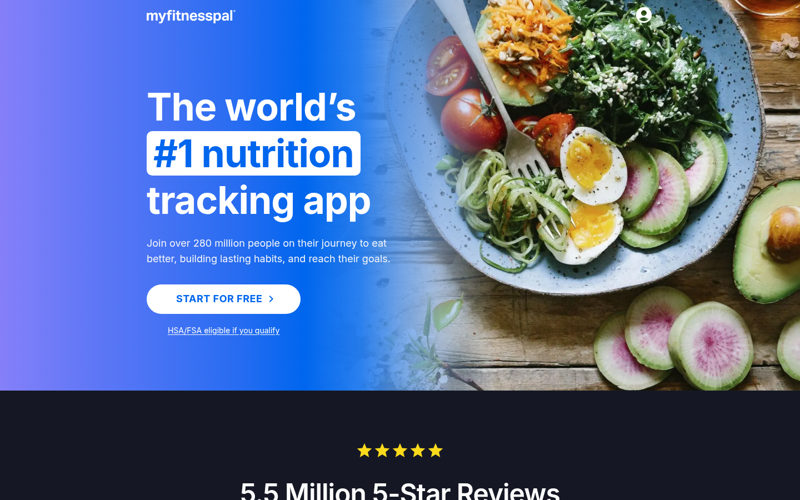
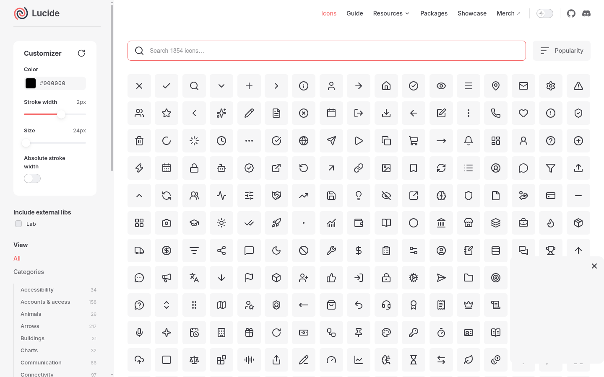
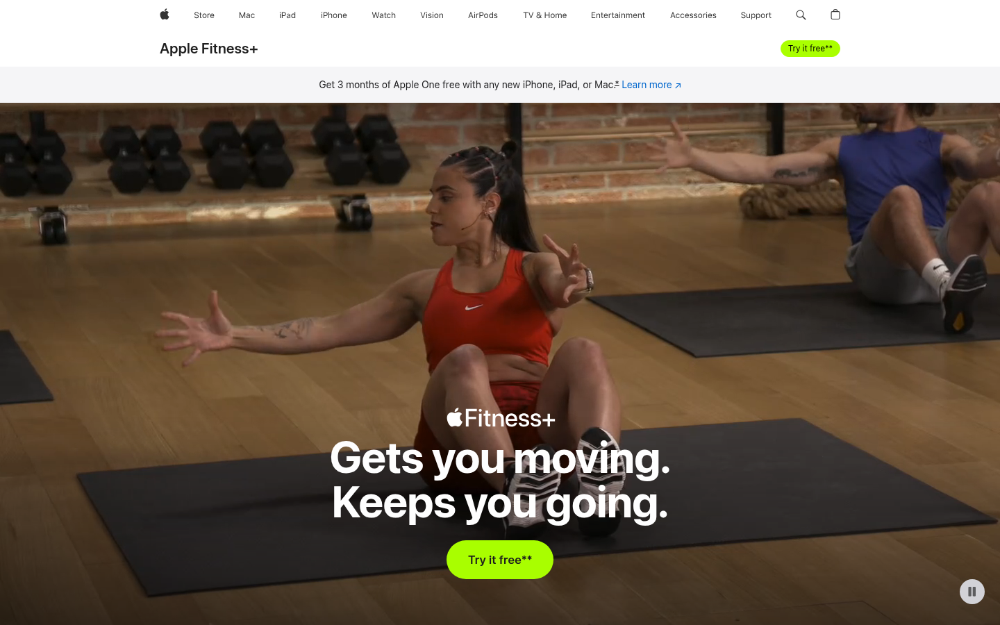

Producto: landing de una app de fitness y bienestar llamada Vita, con una página de bienvenida y una página de registro conectadas por un botón. Estética: calmada, cercana y energética, con un verde teal como color de marca y un coral de acento para las acciones.
Capturé 9 páginas web reales el 1 de octubre de 2026 (pantalla de 1440×900) y las organicé en cuatro categorías. Las capturas están en la carpeta capturas/ y en la página Muro de Inspiracion del archivo de Figma. Los colores y las tipografías que cito se extrajeron automáticamente de cada página con una herramienta de scraping (CSS real de la web), no de memoria. Estos valores son los de la web de cada marca en esa fecha y pueden cambiar.

#F6F4EE, color principal verde azulado oscuro #1D3A44, acento verde salvia #C8E3B1 (visible en la franja superior y en las tarjetas).color/bg/page = #FAF8F3 en lugar de blanco puro, y una familia verde para la marca. Mi primario es un teal más vivo (#0E8F76) para que los botones destaquen más que en Noom.
#FC5200 sobre fondo blanco; el botón «Sign Up With Email» es el único elemento de color intenso del formulario.color/accent/default #FF7A45) se reserva para los CTA. La página de Registro copia la idea de la tarjeta de registro centrada con un botón destacado.
#F9F4F2 (blanco cálido), botón primario azul #0061EF, radio de botón 32 px (forma de píldora), tarjetas redondeadas.radius/full) y tarjetas con esquinas muy redondeadas (radius/lg = 24). No copié su azul: elegí verde para diferenciar el producto.
#1A3E6F, fondo #F7F7F7, botones con radio 100 px.color/secondary/default (#1B2A41) y color/text/primary parten de esa idea.
font/heading/family), porque encaja con un tono calmado y a la vez serio.#F5F7F9, botones con radio de 20-28 px.font/body/family).
font/size/display), un tamaño intermedio entre los h1 de 48 px de Peloton y 68 px de MyFitnessPal.
icon/stroke = 2 y icon/size/md = 24. Las formas (flecha, corazón, check, usuario, correo, llama, play) son dibujos de estilo Lucide hechos por mí.
#AAFF00).color/bg/muted.Resumen de decisiones sacadas del muro: fondos cálidos (Noom, Headspace) · acento cálido único para CTA (Strava) · botones píldora y tarjetas redondeadas (Headspace, Calm) · títulos en marino (Calm) · Poppins + Inter (Google Fonts, Peloton, MyFitnessPal) · iconos de trazo 2 px / 24 px (Lucide).
Todo el sistema se apoya en variables de Figma organizadas en 5 colecciones (99 variables en total). Los componentes y las pantallas no contienen valores sueltos: color, espaciado, radios, tamaños y tipografías están enlazados a variables.
Dos capas: Primitives (17 colores base, con scope vacío para que no aparezcan en los selectores) y Color (24 variables semánticas que son alias de las primitivas). Cambiar una primitiva actualiza todo lo que depende de ella.
| Rol | Variables | Valor base |
|---|---|---|
| Primario | color/primary/default · hover · pressed · subtle | #0E8F76 / #0B7863 / #08604F / #E6F4F1 |
| Secundario | color/secondary/default · hover · pressed | #1B2A41 / #2B3A55 / #0F1B2D |
| Acento | color/accent/default · hover · pressed | #FF7A45 / #FF8F66 / #E8622C |
| Fondos | color/bg/page · surface · muted · inverse | #FAF8F3 / #FFFFFF / #F3EFE6 / #1B2A41 |
| Texto | color/text/primary · secondary · muted · on-primary · on-inverse | #1B2A41 / #374151 / #6B7280 / #FFFFFF / #FAF8F3 |
| Bordes e iconos | color/border/default · focus, color/icon/default · primary · on-primary | #E3DED3 / #0E8F76 … |
Cada variable tiene su scope (fondo, texto, trazo…) y su code syntax web (var(--color-primary-default)).
Encabezados en Poppins (SemiBold / Bold) y párrafos en Inter (Regular / Semi Bold). Las variables son font/heading/family, font/body/family, los estilos (font/heading/style, font/body/style-strong…), los tamaños font/size/* y las alturas de línea font/line-height/*.
| Estilo de texto | Fuente | Tamaño / interlineado |
|---|---|---|
| Display | Poppins Bold | 56 / 64 |
| Heading/H1 | Poppins Bold | 44 / 52 |
| Heading/H2 | Poppins SemiBold | 32 / 40 |
| Heading/H3 | Poppins SemiBold | 24 / 32 |
| Body/Large | Inter Regular | 18 / 28 |
| Body/Regular · Strong | Inter Regular · Semi Bold | 16 / 24 |
| Body/Small | Inter Regular | 14 / 20 |
| Caption | Inter Semi Bold | 12 / 16 |
Los 9 estilos de texto de Figma tienen familia, estilo, tamaño y altura de línea enlazados a esas variables.
Escala base space/1…9 (4, 8, 12, 16, 24, 32, 48, 64, 96 px) y variables semánticas por eje:
spacing/horizontal/sm · md · lg y padding/horizontal/sm · md · lg.spacing/vertical/sm · md · lg · section y padding/vertical/sm · md · lg.radius/sm · md · lg · full. Borde: border/width.grid/columns = 12, grid/gutter = 24, grid/margin = 80, grid/max-width = 1440.7 iconos de trazo (flecha, corazón, check, usuario, correo, llama y play) creados como componentes de 24 px. El color del trazo está enlazado a color/icon/default, el grosor a icon/stroke y el tamaño a icon/size/sm · md · lg · xl (16, 24, 32, 48). Al usarlos dentro de botones y tarjetas se recolorean con variables (color/icon/on-primary, color/icon/primary).
| Componente | Variantes y propiedades | Variables que hereda |
|---|---|---|
| Button | Tipo (Primary, Secondary, Accent) × Estado (Default, Hover, Pressed) = 9 variantes. Propiedades: Label (texto) y Show icon (booleano). | Relleno color/{tipo}/{default|hover|pressed}, texto, padding, gap, radio radius/full, estilo Body/Strong, icono icon/size/md. |
| Input | Estado (Default, Focus, Filled) con etiqueta e icono. Propiedades: Label y Value. | color/border/default|focus, border/width, radius/md, padding, estilos Body/Small y Body/Regular. |
| Feature Card (icono + texto) | Propiedades: Title y Description; el icono se cambia dentro de la instancia. | color/bg/surface, radius/lg, padding/*, icon/size/lg, estilos Heading/H3 y Body/Regular. |
Estados del botón: hover y pressed no son colores sueltos sino variables propias (…/hover, …/pressed). En el prototipo, los botones principales cambian a esas variantes con las interacciones On hover y While pressing.
El prototipo está en la página Prototipo, con dos frames de 1440 px (ancho enlazado a grid/max-width).
color/bg/*), los textos (estilos de texto + color/text/*), los márgenes laterales (grid/margin), el gap de columnas (grid/gutter), los espacios verticales (spacing/vertical/*), los radios y los tamaños de icono están enlazados a variables. No hay valores fijos en colores ni tipografías.color/primary/default en la colección Color, cambian a la vez los botones, los iconos de las tarjetas y el bloque verde del hero. Si cambio grid/margin, se mueven los márgenes de todas las secciones.En la landing, el botón «Empezar ahora» (y también «Crear mi cuenta» de la banda final) navega a la página de Registro (On click → Navigate to, transición Smart Animate de 0,3 s). En Registro, el botón «Volver al inicio» vuelve a la landing. El punto de inicio del flujo es la landing.